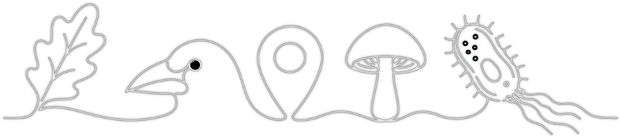

About this map
{{TITLE}}
An interactive map for the {{NAME}} catchment group and landowners: the public information about the catchment's land, water and wildlife, in one place. It shows layers to turn on and off, not a score or ranking.
Using the map
- Layers. Turn layers on and off with the eye, and fade them with the slider. Under land cover, classes lets you show only some kinds of cover, such as native vegetation.
- What's here. Click anywhere to see every layer at that spot, and any species records nearby.
- Your block. Draw an area around a property or block to get its species list, land cover and protected areas, and download them.
- Species. The species list covers every species recorded in the area, grouped by kind; click a group to open it. Only threatened and at-risk species are shown on the map, coloured by their NZ Threat Classification. The chips above the list filter it by threat status. Click a threatened species to see where it was recorded, and use the camera (or Photos in LookLike) to see photos.
The catchment
{{BOUNDARY_NOTE}} Area: {{AREA_HA}} ha.
Species records
{{GBIF_SUMMARY}}
- Threat status is the New Zealand Threat Classification System (NZTCS), matched to each species as Occurd does: by GBIF's taxon, then by name. Where NZTCS assesses subspecies, the one found on this island is used, then the nominate subspecies; if that still leaves a threatened possibility, the species is marked ?. A * means the match was by species name only.
- Threatened and at-risk records are shown where GBIF publishes them. Nothing is blurred on this map. {{YEARS_NOTE}}
- Left out: records whose location was already hidden by their source (for example iNaturalist obscures threatened species to about 28 km), records that could be more than {{MAX_UNC_KM}} km off, records with no name, and sea species recorded at the coast{{EXCLUDED}}.
- Records cluster along roads, tracks and towns, where people go. Few records means few visits, not few species.
Data sources and licences
Whether each source can be used commercially, for example in paid work for a catchment group. Checked {{CHECKED}}; check the source before relying on it.
| Source | Used for | Licence | Commercial use |
|---|
{{LICENCE_SUMMARY}}
Citing this map
Rutherford Ecology ({{YEAR}}). {{TITLE}}. Built with the Rutherford Ecology catchment map engine {{VERSION}}. Species records: GBIF.org, snapshot {{GBIF_DATE}}.